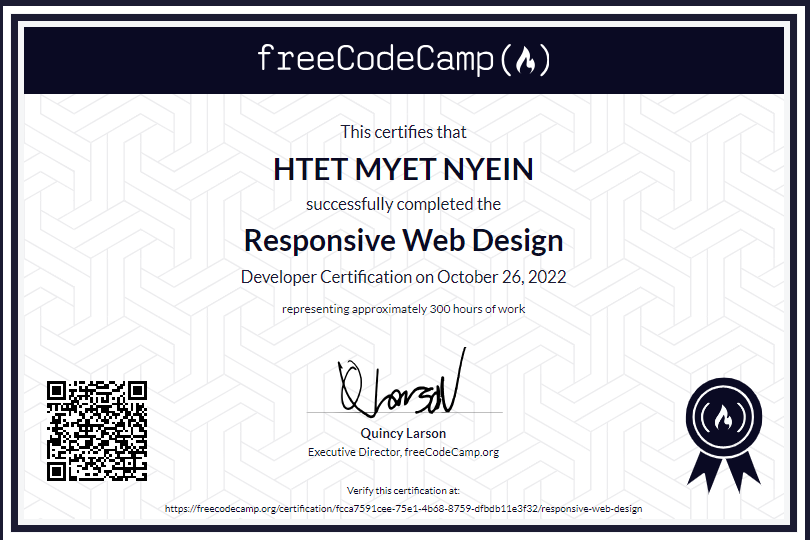
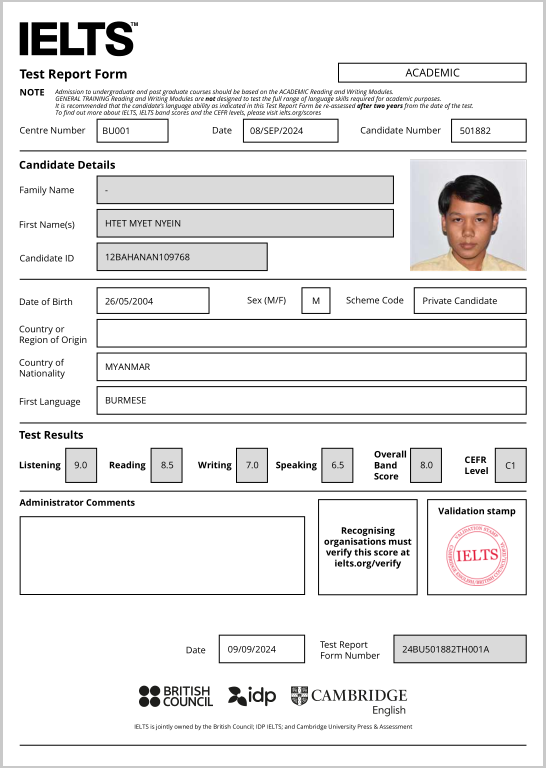

Achievements
Certificate of Responsive Web Design from freeCodeCamp
It was really fun taking this course. Even though HTML and CSS are not “real” programming languages, they still sparked my interest in programming. After completing the course, I built a website for my sister, and the main issue I encountered was hosting. For this website, I used AI only when necessary and took advantage of GitHub’s free hosting service.
IELTS Band 8
I learned about the IELTS when I started seriously researching scholarships. I wasn’t very good at English in high school, but surprisingly, YouTube helped me improve a lot. Most of the credit, however, goes to IELTS practice websites — they were incredibly helpful. I prefer taking tests over studying aimlessly, so I completed nearly all the practice tests available, and my band scores improved steadily. Since I couldn’t properly test my writing and speaking, those two ended up being my lowest scores. I believe that with more effort, I could achieve an even higher overall band score.
Scientific computing with Python

This course really made me fall in love with Python. I completed multiple projects to earn the certificate, and my favorite was the Time Adder project. I didn’t use any built-in Python features or AI; instead, I developed my own 12-hour system. I couldn’t stop smiling while coding this project — it was pure happiness.
College Algebra with Python

Unlike the previous course, this one showed me how vast Python really is and highlighted its major strength in handling data. It also humbled me by revealing how limited my knowledge in Math is and reminded me to continue studying it.